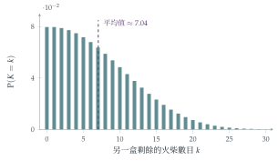

STEP II 1992，第 16 題
繼續之前，請先閱讀題目（原題為英文）。題目載於 STEP Support Programme 的題目資料庫： step.maths.org/questions/92-s2-q16
引子
相傳數學家巴拿赫（Stefan Banach）煙癮很大，兩邊口袋各放一盒火柴。每次要用火柴，他就隨機選一個口袋。有一天，他發現其中一盒空了。另一盒還剩多少根火柴？這就是巴拿赫火柴盒問題（Banach’s matchbox problem），由斯坦豪斯（Hugo Steinhaus）為向巴拿赫致意而設計；本題則是的士司機的版本，把火柴換成了糖果。
微妙之處在於「發現」一詞。司機取走一包糖的最後一顆時，並不會察覺那包已經空了，要到下一次伸手去拿那包糖時才知道。所以這個事件是：她伸手去拿太妃糖，而全部 \(n\) 顆太妃糖早已吃完。計算這件事在第 \(N\) 次伸手時發生的方法數目，是二項分佈（binomial distribution）的一道巧妙練習；而巴拿赫問題的答案有一個出人意表的特點：另一盒最可能剩下的火柴數目是 \(0\)（與 \(1\) 並列）。
動筆之前
若司機在第 \(N\) 次伸手時發現太妃糖已經吃完，第 \(N\) 次伸手必須是甚麼？之前的 \(N - 1\) 次伸手又必須包含甚麼？
第 \(N\) 次伸手必須是去拿太妃糖，而之前的 \(N - 1\) 次伸手必須剛好取走了 \(n\) 顆太妃糖（即全部）和 \(N - 1 - n\) 顆薄荷糖。此外，她在此之前不可以已經發現薄荷糖空了。
逐步解題
階段 1 發現太妃糖吃完了
頭 \(N - 1\) 次伸手可以按甚麼次序出現？\(N - 1 - n\) 要符合甚麼條件，才能確保她從未發現那包薄荷糖是空的？
那 \(n\) 次拿太妃糖的伸手，可以是頭 \(N - 1\) 次伸手中的任何 \(n\) 次。只要她最多取了 \(m\) 顆薄荷糖，即 \(N - 1 - n \leq m\)，她就從未在薄荷糖吃完之後再伸手去拿薄荷糖。因此，對於 \(n + 1 \leq N \leq n + m + 1\)， \[\mathrm{P}(T_N) = \binom{N - 1}{n}p^{n+1}q^{N-1-n},\] 其中 \(T_N\) 是事件「她在第 \(N\) 次伸手時發現太妃糖吃完了」（因子 \(p^{n+1}\) 已包括第 \(N\) 次伸手本身）。
階段 2 發現薄荷糖吃完了
把兩者的角色對調，用同樣的論證可得，對於 \(m + 1 \leq N \leq n + m + 1\)， \[\mathrm{P}(M_N) = \binom{N - 1}{m}q^{m+1}p^{N-1-m}.\]
階段 3 條件概率
已知在第 \(N\) 次伸手時有所發現。那次拿的是太妃糖的概率是多少？
事件 \(T_N\) 與 \(M_N\) 互斥（exclusive），所以 \[\mathrm{P}(\text{太妃糖} \mid \text{有所發現的伸手次數為 } N) = \frac{\binom{N-1}{n}p^{n+1}q^{N-1-n}}{\binom{N-1}{n}p^{n+1}q^{N-1-n} + \binom{N-1}{m}q^{m+1}p^{N-1-m}},\] 其中二項式係數（binomial coefficient）在上述範圍以外一律視為 \(0\)。（若 \(N \leq m\)，則只有太妃糖可能已經吃完，概率為 \(1\)；同樣，若 \(N \leq n\) 但 \(N > m\)，概率為 \(0\)。）■
當 \(n = m\) 且 \(p = q = \frac12\) 時，驗算一下這條公式。根據對稱性，對每一個可能的 \(N\)，答案都應該是 \(\frac12\)。是否如此？
回顧
準確理解事件。「發現」是指伸手去拿一包已空的糖，而不是取走最後一顆糖。
固定最後一步，再數其餘。第 \(N\) 次伸手已經固定；頭 \(N - 1\) 次可以按任何次序出現，於是得出一個二項式係數。
檢查邊界。限制條件 \(N - 1 - n \leq m\) 和 \(N - 1 - m \leq n\) 排除了不可能出現的過程。
背後的數學
巴拿赫的火柴盒
在巴拿赫的版本中，每盒起初有 \(n\) 根火柴，選中每個口袋的機會均等。當他首次發現其中一盒空了，設 \(K\) 為另一盒的火柴數目。若 \(K = k\)，他必定已從空的那盒取了 \(n\) 根，從另一盒取了 \(n - k\) 根，次序不拘，然後再一次伸手去拿空的那盒；而兩盒之中任何一盒都可以是空的那盒： \[\mathrm{P}(K = k) = 2\binom{2n - k}{n}\Bigl(\frac12\Bigr)^{2n - k + 1} = \binom{2n - k}{n}\Bigl(\frac12\Bigr)^{2n - k}.\] 這些概率隨 \(k\) 增大而遞減，唯一例外是 \(\mathrm{P}(K = 0) = \mathrm{P}(K = 1)\)（圖 12.17.1）。剩餘火柴數目的期望值（expected value）約為 \(2\sqrt{n/\pi} - 1\)：若每盒有 \(50\) 根火柴，約為 \(7\)。這個 \(\sqrt n\) 是經過 \(2n\) 次隨機選擇之後，兩盒之間差距的典型大小，與生日問題（第 9.9 節）和隨機漫步（random walk）中的平方根定律如出一轍。

負二項分佈
在一連串獨立試驗（independent trials）中，每次試驗成功的概率為 \(p\)，則取得第 \(r\) 次成功所需的試驗次數服從負二項分佈（negative binomial distribution）：\(\mathrm{P}(N = k) = \binom{k - 1}{r - 1}p^rq^{k-r}\)。的士司機的問題，是兩個負二項過程（太妃糖和薄荷糖）之間的競賽，每個過程所需的「成功」次數都比該包糖的數目多一次。負二項分佈見於保險（索償宗數）、生態學（動物聚集分佈的數目）和遺傳學，往往用來代替泊松分佈（Poisson distribution），因為它更有彈性。
巴拿赫是泛函分析（functional analysis）的奠基人之一，他的數學研究有不少是在 Lwów（今稱 Lviv）的蘇格蘭咖啡館（Scottish Café）裏完成的。他和同事把問題寫在一本由侍應保管的筆記簿上，這就是《蘇格蘭書》（Scottish Book），解題獎品從一杯啤酒到一隻活鵝不等。斯坦豪斯是巴拿赫的恩師，他為了一篇向巴拿赫的吸煙習慣致意的演說，設計了這道火柴盒問題。最先在書刊中分析這個問題的，是費勒（William Feller）1950 年出版的著名概率論教科書。
思維技巧
要求一個過程在某一時刻以某種方式結束的概率，可先固定最後一步發生的事，再數出通往這一步的所有過程。
在大學裏，這是負二項分佈、隨機漫步的首達時間（first-passage time），以及 第 9.10 節 中反射原理（reflection principle）的基礎。
延伸練習
小規模情況。設 \(n = m = 1\) 及 \(p = \frac12\)，列出所有可能的序列，並求 \(N\) 的分佈。
巴拿赫公式。對 \(n = 1\) 和 \(n = 2\)，驗證 \(\sum_{k=0}^{n}\binom{2n - k}{n}2^{-(2n-k)} = 1\)。
並列最高。證明在巴拿赫問題中，對每一個 \(n\) 都有 \(\mathrm{P}(K = 0) = \mathrm{P}(K = 1)\)。
哪一包先吃完？就的士司機的問題，當 \(n = m = 2\) 及 \(p = \frac23\) 時，求太妃糖是首先被發現空了的那一包（不論何時發現）的概率。
延伸閱讀
William Feller, An Introduction to Probability Theory and Its Applications, Vol. 1（Wiley），第 VI 章，正是這本書把巴拿赫問題介紹給全世界。
R. Daniel Mauldin (ed.), The Scottish Book（Birkhäuser）。收錄蘇格蘭咖啡館的問題，並附評註。
Geoffrey Grimmett & Dominic Welsh, Probability: An Introduction（Oxford University Press），內容涉及負二項分佈。